응용지질기사 (2011-06-12 기출문제)
1과목: 암석학 및 광물학
1. 광물성분이 같은 심성암과 화산암의 연결로 옳지 않은 것은?
- 화강암 – 유문암
- 섬록암 – 안산암
- 반려암 – 현무암
- 감람암 – 조면암
(정답률: 77%)

2. 다음 중 엽리가 발달되어 있지 않고 치밀하고 단단한 조직을 보여주는 변성암은?
- 압쇄암
- 혼펠스
- 점판암
- 편마암
(정답률: 97%)
3. 사막지역에서 바람에 의하여 만들어진 사구에서 관찰할 수 있는 퇴적구조는?
- 건열(mud cracks)
- 연흔(ripple marks)
- 사층리(cross-bedding)
- 점이층리(graded bedding)
(정답률: 79%)
4. 하천과 호수가 많이 발달한 지역에 주로 생성되는 퇴적암이 아닌 것은 ?
- 사암
- 역암
- 이암
- 표석점토암
(정답률: 91%)
5. 다음 변성광물 중 접촉 변성암에서는 거의 나타나지 않는 광물은?
- 홍주석
- 규회석
- 십자석
- 근청석
(정답률: 48%)
6. 변성대는 지체구조와 밀접한 관계가 있다. 지판과 지판의 경계가 수렴형으로 나타나는 지역에서의 변성작용의 유형으로 옳은 것은?
- 호상열도 아래에서는 저압형 변성작용, 해구부근에서는 고압형 변성작용이 일어난다.
- 호상열도 아래에서는 고압형 변성작용, 해구부근에서는 저압형 변성작용이 일어난다.
- 호상열도 아래, 해구부근 모두 저압형 변성작용이 일어난다.
- 호상열도 아래, 해구부근 모두 고압형 변성작용이 일어난다.
(정답률: 85%)
7. 북한산에서 채취한 화강암의 암석박편에서 정누대구조(normal zonal structure)를 보여주는 사장석의 결정이 관찰되었다. 이 결정의 중심부에서 연변부로 가면서 함량이 상대적으로 증가하는 원소는?
- Ca
- Fe
- Mg
- Na
(정답률: 84%)
8. 다음 중 물 속에 용해되어 있던 물질이 물의 증발로 침전되어 형성된 암석은?
- 각력암
- 암염
- 집괴암
- 응회암
(정답률: 97%)
9. 화성암체 중에서 가장 지하 깊숙이, 가장 규모가 크게 산출되는 것은?
- 저반
- 암맥
- 용암류
- 암상
(정답률: 75%)
10. 다음 그림은 심성암의 분류를 나타낸 것이다. 그림에서 X 표시에 해당하는 암석은?
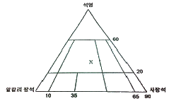
- 섬장암
- 섬록암
- 화강암
- 반려암
(정답률: 60%)
11. 다음 광물의 화학결합에 대한 설명 중 옳지 않은 것은?
- 원소들간에 존재하는 결합의 종류는 화합물을 만드는 원자들의 전자구조에 의하여 결정
- 많은 광물들은 한 가지 이상의 방식으로 결합되어 있고 이 경우에는 그 광물의 물리적 성질은 가장 강한 결합방식에 의하여 결정된다.
- 원자들은 이온결합, 공유결합, 금속결합 및 판데르 바알스 결합에 의하여 결합되어 있다.
- 규산염 광물에 있어서 Si-O 결합은 대략 절반은 이온결합이고 절반은 공유결합이다.
(정답률: 73%)
12. Gibbs의 상률(phase rule)을 올바르게 표시한 것은? (단, P : 상(相)의 수, F : 자유도, C : 성분의 수)
- P + C = F + 2
- P + 2 = C = F
- P + F = C + 2
- P = C + F + 2
(정답률: 86%)
13. 빛의 세기가 같고 진동방향이 서로 직각인 두 편광이 합성되었을 때 나타나는 현상은?
- 빛의 증폭 현상
- 빛의 소광 현상
- 빛의 회절 현상
- 빛의 직진 현상
(정답률: 75%)
14. 다음 중 점토광물에 대한 설명으로 옳지 않은 것은?
- 점토광물은 물이 결정구조 및 물리적인 성질을 결정하는 중요한 성분이다.
- 점토광물은 단위 중량당 표면적이 매우 크다.
- 점토광물은 이온교환성과 팽윤성이 매우 크다.
- 점토광물은 미립의 입자로서 망상형 구조를 가진다.
(정답률: 63%)
15. 다음 중 섬유 또는 침상으로 산출되는 광물에 해당하지 않는 것은?
- 크리소타일
- 크로시돌라이트
- 전기석
- 투각섬석
(정답률: 48%)
16. 황철석을 화학 분석할 때 Fe의 이론적 함량은? (단, Fe의 원자량 : 55.85, S의 원자량 : 32.07)
- 53.46 중량%
- 46.55 중량%
- 34.52 중량%
- 22.87 중량%
(정답률: 76%)
17. 광물이 강한 충격을 받게 되어 불규칙하게 깨어진 면을 단구(fracture)라 한다. 다음 중 단구의 종류가 아닌 것은?
- 패각상
- 토상
- 불평탄
- 수지상
(정답률: 77%)
18. 다음 중 쌍정의 성인, 즉 생성원인과 관계가 없는 것은?
- 전이 쌍정
- 윤좌 쌍정
- 성장 쌍정
- 역학적 쌍정
(정답률: 87%)
19. 다음 중 광원에 따라 색이 다르게 나타나는 광물은?
- 알렉산드라이트
- 녹주석
- 조이사이트
- 탄자나이트
(정답률: 67%)
20. 온도변화에 따른 두 광물 사이의 천이(상변화)에서 서로 비가역적인 것은?
- 사방 황 - 단사 황
- 섬아연석 - 부르자이트
- 저온석영 - 고온석영
- 아라고나이트 - 방해석
(정답률: 41%)
2과목: 구조지질학
21. 지층의 선후관계를 구별하여 지질시대를 확립하는데 사용된 지사학의 5대 법칙에 해당하지 않는 것은?
- 관입의 법칙
- 동일과정의 법칙
- 누중의 법칙
- 표준화석의 법칙
(정답률: 63%)
22. 다음 중 대륙-대륙 충돌대(continent-continent collisional belt)의 직접적 혹은 간접적인 증거가 아닌 것은?
- 다이아몬드(diamond)
- 코에사이트(coesite)
- 연옥(nephrite)
- 에클로자이트(eclogite)
(정답률: 64%)
23. 절대연대측정법 중 충적세에 발생한 단층운동의 최후 운동시기를 한정하는데 가장 적당한 것은?
- 우라늄/납 방법
- 탄소 동위원소 방법
- 칼륨-아르곤 방법
- 루비듐/스토론튬 방법
(정답률: 71%)
24. 맨틀대류의 상승부에 나타나는 특징이 아닌 것은?
- 천발지진
- 해구형성
- 열곡발달
- 베게용암분출
(정답률: 75%)
25. 다음 그림을 설명하는 용어로 맞는 것은? (단, Tr, J, K는 각각 지질시대를 나타내는 약자이며, 순서대로 Triassic, Jurassic, Cretaceous를 의미한다.)
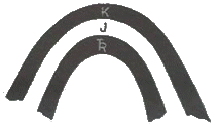
- 배사(anticline)
- 향사형 배사(synformal anticline)
- 향사(syncline)
- 배사형 향사(antiformal syncline)
(정답률: 72%)
26. 다음의 지진파 성분 중 전파 속도가 가장 빠른 것은?
- P파
- S파
- L파
- Rayleigh파
(정답률: 81%)
27. 드러스트 판을 하나의 판으로 가정하였을 때, 이 판 위에 얹혀 있는 지괴들은 드러스트 운동 방향과 각각의 위치에 따라 다른 변형 구조를 형성한다. 다음 그림과 같이 왼쪽에서 오른쪽으로 움직이는 드러스트 판이 있을 때, 각 위치에서 나타날 수 있는 지질구조로 옳지 않은 것은?
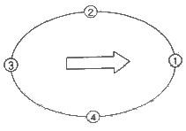
- ① : 드러스트 단층
- ② : 우수향 주향이동단층
- ③ : 정단층
- ④ : 우수향 주향이동단층
(정답률: 67%)
28. 습곡의 중첩구조 중, 선행 습곡구조가 수평선의 습곡축을 가진 횡와습곡인 경우, 선행 습곡구조의 습곡축과 직각을 이루는 수평선을 습곡축으로 하고, 수직의 습곡 축면을 가진 2차 습곡에 의해 발달 할 수 있는 간섭 구조는 무엇인가?
- 중복 중첩 습곡(redunant superposition)
- 돔과 분지 형태(dome and basin pattern)
- 돔-초승달-버섯 형태(dome and basin pattern)
- 재습곡 형태(refolded fold)
(정답률: 75%)
29. 다음 중 연성변형(ductile deformation)작용을 받았을 때 형성되는 것은?
- 부정합
- 습곡
- 산사태
- 포행
(정답률: 85%)
30. 지형 발달 과정에서 원지형(原地形)이 거의 소멸되었으며, 서로 이웃에 있는 골짜기나 유역 사이의 분수령이 둥글게 되어 서서히 고도를 낮추는 단계는?
- 유년기
- 장년기
- 노년기
- 준평원기
(정답률: 56%)
31. 다음 중 대륙에서부터 해양으로의 발달 순서대로 지형을 알맞게 나열한 것은?
- 대륙붕 – 대륙대 – 대륙사면 – 해저산맥
- 대륙붕 – 대륙사면 – 대륙대 – 해저산맥
- 대륙대 – 대륙붕 – 대륙사면 – 해저산맥
- 대륙대 – 대륙사면 – 대륙붕 – 해저산맥
(정답률: 32%)
32. 어떤 지역에서 지하 2km에 지하구조물을 설치하려고 한다. 암석의 평균 밀도가 3g/cm3일 때 구조물이 받는 수직응력은 얼마인가? (단, 중력가속도 g = 9.8 m/sec2임])
- 58.8MPa
- 61.2 MPa
- 588MPa
- 612MPa
(정답률: 72%)
33. 2차원 변형 좌표계에서 주신장율 λ1, λ2를 정의하였을 때, λ1의 값이 1 이고, λ2의 값이 1보다 작을 때, 나타날 수 있는 지질 구조는 무엇인가?
- λ1 방향의 습곡축을 가진 습곡 구조
- λ2 방향의 습곡축을 가진 습곡 구조
- λ1 방향의 부딘 구조
- λ2 방향의 부딘 구조
(정답률: 56%)
34. 인도판과 유라시아판의 경계 특성으로 알맞은 것은?
- 발산 경계
- 압등 경계
- 변환단층 경계
- 충돌 경계
(정답률: 80%)
35. 다음 중 조륙운동에서 융기의 증거와 관계가 없는 것은?
- 이탈리아 세라피스 사원의 대리석 기둥에 해서생물인 보오링셸의 자국이 있다.
- 해저삼림이 있다.
- 해안단구와 하안단구가 있다.
- 높은 산위에 해성퇴적암인 석회암층이 있다.
(정답률: 78%)
36. 다음 중 비정합(disconformity)을 이루는 조건으로 옳은 것은?
- 부정합면 아래 심성암이 분포한다.
- 부정합면 아래 지층과 위의 지층의 성층면이 서로 평행하다.
- 부정합면 아래 지층이 많은 침식을 받았다.
- 부정합면 아래 변성암이 분포한다.
(정답률: 48%)
37. 다음 중 평형상태에서 두 개의 서로 직교하는 면에 작용하는 stress tensor components를 바르게 나타낸 것은? (단, 2차원 평면상태이다.)
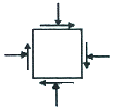
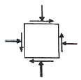
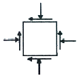
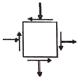
(정답률: 62%)
38. 주로 압축 메커니즘에 의하여 지진이 발생되는 곳은?
- 변환단층(transform fault)
- 해령(oceanic ridge)
- 해구(trench)
- 순상지(shield)
(정답률: 89%)
39. 지진파 자료로부터 진앙의 위치를 결정하기 위해서는 최소 몇 개의 관측소가 필요한가?
- 1개
- 2개
- 3개
- 4개
(정답률: 61%)
40. 단층면의 주향과 경사는 N15° E/30° SE이고, 단층면 상의 단층조선의 피치(Pitch)가 30° N인 단층에서 실변위(net slip)가 2.5m로 기록되었다면, 다음 중 가장 큰 값은?
- 주향이동성분(streike-slip component)
- 경사이동성분(dip-slip component)
- 수평이동(heave)
- 수직성분(vertical component)
(정답률: 73%)
3과목: 탐사공학
41. 토양층 중 B층에 대한 설명으로 옳지 않은 것은?
- 기후와 식생의 영향을 직접 받는 층으로 상부에 유기물층이 존재한다.
- 주로 철산화물이나 점토광물이 집적된 층이다.
- 미량원소들이 농축되는 경우가 많으므로 지구화학탐사의 대상층이 된다.
- 적갈색, 황갈색, 암회색 등의 색을 띤다.
(정답률: 89%)
42. 시료의 정량분석 중 X선 형광분석법에 대한 설명으로 잘못된 것은?
- 1차 X선에 의해 방사되는 2차 X선의 분광을 이용한다
- 시료를 분말가압성형법과 용융법으로 제조하여 고체나 액체 시료 모두를 분석할 수 있다.
- 다원소 분석이 가능하며, 정밀도가 높다.
- Mg, Al, Si 등에 대한 최저측정한계와 측정오차가 적어 미량분석에 주로 이용된다.
(정답률: 61%)
43. 다음 중 전자탐사법에 대한 설명으로 옳지 않은 것은?
- 시간영역 전자탐사법은 계단파(step Function)를 사용하여 맴돌이 전류(eddy current)에 의한 2차장을 측정한다.
- 주파수영역 전자탐사법에서는 가탐심도가 주파수의 제곱근에 비례하므로 심부탐사를 위해서는 고주파수를, 천부탐사를 위해서는 저주파수를 사용한다.
- 전자탐사는 전자기적인 잡음이 강한지역에서는 조사가 불가능하다.
- 전자탐사는 암반지역과 같이 전극의 설치가 불가능한 지역에서도 탐사가 가능하다.
(정답률: 79%)
44. 다음 중 자연전위(SP) 탐사 시 자연전위의 크기가 가장 높게 나타나는 광체는?
- 산화물 광체
- 황화물 광체
- 탄산염 광체
- 규산염 광체
(정답률: 86%)
45. 지자기장의 요소들 간에 관계식으로 틀린 것은? (단, D=편각, I=복각, H=지자기장의 수평성분, Z=지자기장의 수직성분, T=총자기이다.)
- T=(H2+Z2)2
- Z=Tsin I
- H=Tcos I
- tan I=Z/H
(정답률: 74%)
46. 다음 중 친석원소에 해당하지 않는 것은? (단, Goldschmidt의 분류에 의함)
- 라돈(Rn)
- 루비듐(Rb)
- 불소(F)
- 텅스텐(W)
(정답률: 53%)
47. 탄성파 자료를 취득할 때 샘플링 주파수의 결정은 매우 중요하다. 현장에서 4ms 간격으로 탐사자료를 샘플링 할 때 150Hz의 신호는 알리아싱 때문에 몇 Hz로 나타나게 되는가?
- 50Hz
- 75Hz
- 100Hz
- 125Hz
(정답률: 35%)
48. 굴절법 탄성파 탐사의 경우 2개의 수평지층 I, II에 있어서 탄성파 속도가 각각 V1, V2 일 때 지층 I의 깊이는 얼마인가? (단, 임계거리는 10m, V1=1500m/s, V2=3000m/s)
- 8.66m
- 10.25m
- 11.32m
- 13.67m
(정답률: 56%)
49. 다음 중 고체 - 액체 경계면에서 항상 생성되어 전파하는 표면파는?
- 레일리파
- 그라운드롤
- 러브파
- 스톤리파
(정답률: 70%)
50. 탄성파 속도가 V1, V2인 두 매질이 이루는 경계면에 탄성파가 입사할 때 굴절각이 90° 가 되는 입사각인 임계각(critical angle) ic를 나타내는 식으로 옳은 것은? (단, V2 > V1)
- sin ic=V2/V1
- sin ic=V1/V2
- cos ic=V2/V1
- cos ic=V1/V2
(정답률: 80%)
51. 다음 중력 이상 중 측정 중력치에 대하여 위도보정과 고도보정을 실시한 후, 이로부터 기준점에서의 표준 중력값을 뺀 값을 무엇이라고 하는가?
- 지각평형 이상
- 단순부게 이상
- 후리-에어 이상
- 부게 이상
(정답률: 62%)
52. 다음 중 자력탐사에 대한 설명으로 옳지 않은 것은?
- 자력탐사는 다른 탐사법과 비교할 때 분해능이 상대적으로 낮지만 탐사의 깊이가 깊고, 항공 및 해상탐사가 가능하므로 석유등 지하자원 탐사와 지구조연구를 위한 광역 탐사에 이용된다.
- 대자율과 지자기장의 곱으로 표현되는 자화 강도를 측정함으로써 자기 이상체를 탐지하거나 지하구조를 측정하는 방법이다.
- 자력탐사는 중력탐사와 같이 지형보정, 고도보정, 프리에어보정을 반드시 실시해야 한다.
- Flux-gate 자력계는 자기유도와 자기 이력을 이용하여 시추 코어의 방향과 같은 자기장 성분을 측정하는 자력계이다.
(정답률: 67%)
53. 다음의 물질에 P파가 전파될 때 전파 속도가 느린 물질부터 빠른 물질의 순서로 옳게 나열된 것은?
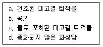
- b – a – c – d
- d – c – a – b
- b – c – a – d
- a – c – d – b
(정답률: 60%)
54. 다음 중 전기탐사법에서 한 지점의 깊은 곳까지의 비저항변화를 측정 할 경우 일반적으로 가장 많이 사용되는 전극배열법은?
- 슐럼버저 배열법
- 웨너 배열법
- 쌍극자 배열법
- 정사각형 배열법
(정답률: 63%)
55. 다음 중 지자기의 일변화 (diurnal variation)에 가장 영향을 끼치는 것은?
- 태양
- 맨틀이나 외핵의 운동
- 유도전자장
- 자기폭풍
(정답률: 84%)
56. 중력 탐사에서 지질구조에 따른 중력 이상에 대한 설명 중 틀린 것은?
- 화강암체나 암염동 구조는 음의 중력 이상을 나타낸다.
- 열곡대에서는 매우 큰 음의 중력 이상이 나타난다.
- 해안, 해령 및 해구 등으로 이루어진 해양 구조에서 부게 이상은 지각평형에 의한 보상작용 때문에 해령의 정상부에서 최소가 된다.
- 일반적으로 부게 이상의 대규모적인 변화는 지표 근처에 존재하는 소규모의 이상밀도를 갖는 질량체에 기인된다.
(정답률: 53%)
57. 다음 중 시추공 텔레뷰어(borehole televiewer)에 대한 설명으로 옳은 것은?
- 신호원으로 초음파를 사용하며 반사파의 진폭 및 주시를 측정한다.
- 카메라처럼 시추공벽의 디지털 화상자료(image)를 제공한다.
- 시추공볍 주변의 공극률을 직접적으로 측정할 수 있다.
- 실제 암석의 색을 볼 수 있어 암종의 구분이 가능하다.
(정답률: 59%)
58. 두 개의 서로 다른 매질의 경계면에 탄성파가 수직으로 입사하는 경우 반사계수(R)를 구하는 식으로 옳은 것은? (단, ρ1, ρ2 및 V1, V2는 각각 상 · 하부층의 밀도 및 탄성파 속도이다.)
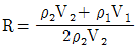
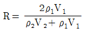
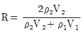
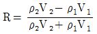
(정답률: 80%)
59. 물리탐사자료의 역산(inversion)에 대한 설명으로 옳은 것은?
- 모델변수(지하매질의 물성분포)로부터 현장자료를 얻는 과정이다.
- 이론자료와 현장자료의 차를 계산하는 과정이다.
- 현장자료로부터 모델변수(지하매질의 물성분포)를 얻는 과정이다.
- 모델변수(지하매질의 물성분포)의 변화에 대한 현장자료의 변화량을 계산하는 과정이다.
(정답률: 64%)
60. 다음 중 지하투과 레이다 탐사법(GPR)에 대한 설명으로 옳지 않은 것은?
- 수 십 MHz ~ 수 GHz 주파수 대역의 전자기 펄스를 이용한다.
- 매질간의 유전율의 차이에 의한 전자기파의 반사와 회절현상 등을 측정하고 이를 해석하여 지질구조를 파악한다.
- 점토층 지역의 경우 높은 전기전도도에 의해 전자기파의 심도에 따른 감쇠가 작아 상대적으로 높은 탐사 적용성을 가진다.
- 매우 높은 고주파를 사용하기 때문에 전자기적 잡음에 강하다.
(정답률: 74%)
4과목: 지질공학
61. 암반의 응력-변형률 관계를 구하기 위한 정적 시험 방법에 해당하지 않는 것은?
- 평판재하시험
- 종파속도측정
- 수압재해시험
- 공내재하시험
(정답률: 49%)
62. 극히 느린 속도로 사면을 따라 미미하게 계속되는 풍화 생성물의 이동을 무엇이라 하는가?
- 포행(creep)
- 계류(creek)
- 유수(stream)
- 이류(mudflow)
(정답률: 85%)
63. 다음 중 공극률은 크지만 투수성이 가장 낮은 퇴적물은 무엇인가?
- 점토
- 미사
- 모래
- 자갈
(정답률: 92%)
64. 화학적 풍화에 의해 정장석이 고령토로 변질되는 현상은 다음 중 어느 것에 해당되는가?
- 탈수작용(dehydration)
- 산화작용(oxidation)
- 가수분해작용(hydrolysis)
- 용해작용(dissolution)
(정답률: 67%)
65. 다음 중 얕은 기초에 속하지 않는 것은?
- 전면기초
- 독립기초
- 연속기초
- 말뚝기초
(정답률: 67%)
66. 다음 중 사면파괴를 일으키는 내적요인(전단감도를 감소시키는 요인)이 아닌 것은?
- 흡수에 의한 점토지반의 팽창
- 공극수압의 감소
- 불안정한 흙속에서 발생하는 변형
- 느슨한 토립자의 진동
(정답률: 69%)
67. Q-system의 평가요소에 대하여 다음과 같은 결과를 얻었다. Q값을 이용하여 RMR값을 추정하면 얼마인가? (단, RMR과 Q의 관계식은 Bieniawski(1976)의 제안식을 이용한다.)
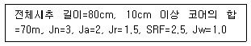
- 43.5
- 53.5
- 63.5
- 73.5
(정답률: 46%)
68. 다음 중 암반사면 안정성의 분석에 적용할 수 없는 해석법은?
- 평사투영법
- 한계평형법
- 영향도표법
- 유한차분법
(정답률: 50%)
69. 지반구조를 해석하기 위한 불연속면의 분포양상을 조사하는 기법 중 조사선 기법의 조사방법에서 일반적으로 고려해야 할 사항으로 옳지 않은 것은?
- 선정된 암석과 불연속면은 조사대상지역의 특성을 대표하여야 한다.
- 조사선 시작점은 가능하면 불연속면에서 멀리 위치시킨다.
- 조사면이 편평하지 않아 조사선이 20° 이상 벗어나면 조사선을 세분하여 설치한다.
- 노출된 불연속면의 크기와 간격을 고려하여 상대적으로 넓고 깨끗한 암반표면을 선정한다.
(정답률: 74%)
70. 암반사면에서 평면파괴가 일어나기 위해 만족되어야 하는 기하학적인 조건으로 옳지 않은 것은?
- 미끄러짐면은 경사면에 평행하거나 거의 평행해야 한다.
- 미끄러짐면의 경사각은 그 면의 마찰각보다 커야 한다.
- 미끄러짐면의 경사각은 사면의 경사각보다 커야 한다.
- 미끄러짐에 저항력을 갖지 않는 이완면이 미끄러짐의 측면 경계부로서 암반 내에 존재해야 한다.
(정답률: 46%)
71. 다음 중 자유면 대수층의 특성에 해당하지 않는 것은?
- 지하수면에서의 압력이 대기압과 동일한 상태하에 있는 대수층이다.
- 기반암과 같은 불투수층이 대수층의 하부경계가 된다.
- 자유면 지하수의 수평범위가 국부적으로만 분포되어 있을 때 이를 부유대수층이라 하며 자유면 대수층의 특수한 경우이다.
- 지하수면은 강수의 지하함양으로 인해 지하수의 배출로 인한 변동이 없고 항상 일정하다.
(정답률: 76%)
72. 다음 그림과 같은 토양 컬럼실험에서 C지점과 D지점에서의 전수두(total head)를 바르게 나타낸 것은?
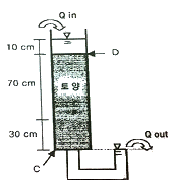
- C지점: 0cm, D지점: 110cm
- C지점: 0cm, D지점: 100cm
- C지점: 100cm, D지점: 100cm
- C지점: 110cm, D지점: 10cm
(정답률: 67%)
73. 연약지반에 구조물을 구축하기 전에 구조물의 하중과 동일하거나 그 이상의 하중을 지반 위에 재하하여 연약토층의 압밀을 촉진시키는 지반개량공법으로 구조물 시공 후의 잔류침하를 최소화시킴과 동시에 지반의 강도를 증가시키는 공법은?
- 수직배수공법
- 굴착치환공법
- 선행압밀공법
- 진동부유공법
(정답률: 63%)
74. 직경이 5m, 두께가 2.5cm인 원판형 시험편에 압열인장시험(Brazilian Test)을 실시한 결과 10kN의 힘이 가해질 때 시험편이 파괴되었다. 이 시험편의 인장강도는 얼마인가?(오류 신고가 접수된 문제입니다. 반드시 정답과 해설을 확인하시기 바랍니다.)
- 25.5MPa
- 16.0MPa
- 12.7MPa
- 5.1MPa
(정답률: 35%)
75. 경사가 30°인 사면에 단위중량이 2.5g/cm3이고, 한 변의 길이가 1.2m인 정육면체의 암석 블록이 놓여있다. 블록의 미끄러짐에 대한 안전율은 얼마인가? (단, 사면과 블록의 마찰력각은 45°이고, 점착력은 0이다.)
- 1.29
- 1.43
- 1.57
- 1.73
(정답률: 50%)
76. 공극비가 0.7, 입자의 비중이 2.65인 흙의 수중단위중량은 얼마인가?
- 0.77t/m3
- 0.97t/m3
- 1.47t/m3
- 1.97t/m3
(정답률: 60%)
77. 다음 중 충격식 시추법에 대한 설명으로 옳지 않은 것은?
- 비트의 회전운동과 압력수의 작용에 의해 굴진작업이 이루어진다.
- 견고한 암반층이나 자갈층을 관통할 수 있다.
- 시추공의 붕괴위험이 있는 경우 측면지지를 위하여 케이싱을 삽입한다.
- 굴진 중의 충격 때문에 연약한 점토나 느슨한 사질토에는 적합하지 못하다.
(정답률: 60%)
78. 다음 중 이방성이 가장 클 것으로 예상되는 암석은 무엇인가?
- 천매암
- 안산암
- 화강암
- 사암
(정답률: 75%)
79. 불연속면의 주향방향이 터널 굴진 방향과 평행이고 경사가 40° 이다. 터널 굴진에 있어서 이 불연속면의 방향성이 미치는 영향으로 옳은 것은?
- 매우 불리
- 불리
- 보통
- 유리
(정답률: 46%)
80. 다음 중 수압파쇄시험에 대한 설명으로 옳지 않은 것은?
- 수압파쇄시험은 단일 시추공에서 심도에 영향을 받지 않고 실시할 수 있다.
- 수압파쇄시험에 의해 암반의 인장강도를 구할 수 있다.
- 수압파쇄에 의한 균열의 발달은 최소 주응력 방향이다.
- 수압파쇄시험은 암반의 초기응력을 측정하기 위한 시험이다.
(정답률: 69%)
5과목: 광상학
81. 다음 중 한반도에 남부의 화강암을 지나방향(NE-SW)으로 분포하게 한 조산운동은?
- 송림 변동
- 대보조산운동
- 불국사 운동
- 제4기 화산활동
(정답률: 57%)
82. 금속제련의 주 대상인 알루미늄 광석은 대부분 수산화알루미늄에 해당된다. 다음 중 수산화알루미늄에 해당되는 함알루미늄 광석광물이 아닌 것은?
- 다이아스포어(diaspore)
- 크리소타일(chrysotile)
- 깁사이트(gibbsite)
- 보크사이트(bauxite)
(정답률: 59%)
83. 우리나라의 광상 중에서 대부분의 동(Cu)광상은 어느 광화대에 주로 분포하고 있는가?
- 함안-군북 광화대
- 태백산지구 광화대
- 설천 광화대
- 황광리 광화대
(정답률: 71%)
84. 다음 중 안정동위원소와 표준물질의 연결로 옳은 것은?
- 산소 및 수소 – PDB
- 탄소 – SMOW
- 황 – CDT
- 질소 – SEG
(정답률: 56%)
85. 표성부화광상(Supergene enrichment deposit)에 대한 설명으로 옳지 않은 것은?
- 풍화과정에 의해 형성된다.
- 황산염광물의 산화 및 수산화 광물이다.
- 반암동 광상에서 특히 중요하다.
- 지표 가까운 부분에서 생성된다.
(정답률: 43%)
86. 다음 중 내화벽돌의 원료 광물로서 가장 적절한 것은?
- 장석
- 형석
- 납석
- 방해석
(정답률: 35%)
87. 다음 중 광맥광상(맥상광상)의 유체포유물 연구로서 알 수 없는 것은?
- 광상생성온도
- 염농도
- 포유물의 화학성분
- 광상형성시기
(정답률: 80%)
88. 다음 중 광석광물의 침전을 결정하는 주요 요인으로 옳지 않은 것은?
- 온도
- 압력
- 모암의 화학조성
- 모암의 투수성
(정답률: 58%)
89. 광맥(Vein)의 형태 중에서 팽축(pinch and swell)은 다음 중 어떤 구조에서 가장 잘 만들어지는가?
- 단층
- 소규모의 절리
- 습곡
- 부정합
(정답률: 45%)
90. 다음의 열극충진조직 중 맥상광물을 침전시키는 광화유체나 환경이 변하여 침전광물의 구성이 변하였음을 인지시켜주는 조직은?
- 정동조직
- 호상조직
- 세립질조직
- 빗살조직
(정답률: 48%)
91. 다음 중 변성광상의 주요 광석광물이 아닌 것은?
- 석면
- 흑연
- 황산연석
- 활석
(정답률: 21%)
92. 다음 중 반암동광상(porphyry copper deposits)에 발달하는 변질대의 일반적인 광역적 공간배열을 중심부로부터 차례대로 바르게 서술한 것은?
- 칼륨변질대 – 필릭변질대 – 이질변질대 – 프로필라이트변질대
- 칼륨변질대 – 이질변질대 – 필릭변질대 – 프로필라이트변질대
- 필릭변질대 – 이질변질대 – 프로필라이트변질대 – 칼륨변질대
- 필릭변질대 – 프로필라이트변질대 – 이질변질대 – 칼륨변질대
(정답률: 60%)
93. 다음 중 그라이젠(greisen)에 수반되는 광물로 옳지 않은 것은?
- 리튬운모
- 황옥
- 석석
- 녹니석
(정답률: 12%)
94. 우리나라 페그마타이트광상에서 주된 산출광종이 아닌 것은?
- 주석(Sn)
- 중석(W)
- 아연(Zn)
- 우라늄(U)
(정답률: 50%)
95. 국내 주요 스카른형 연-아연광상인 제1연화광상에 대한 설명으로 옳지 않은 것은?
- 모암은 묘봉층 일부와 풍촌석회암층이다.
- 관계 화성암은 화강섬록암이다.
- 주요 광석광물은 섬아연석, 방연석, 황동석이다.
- 수반 광물은 자류철석, 황철석, 백철석 등이다.
(정답률: 30%)
96. 다음에서 설명하는 것은 무엇인가?
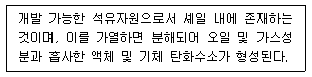
- 타르
- 케로젠
- 비투멘
- 바이오매스
(정답률: 35%)
97. 다음 중 우리나라 철광상이 밀집 분포하는 지역으로 틀린 것은?
- 경상남도 고성지구
- 강원도 홍천지구
- 강원도 양양지구
- 충청북도 충주지구
(정답률: 43%)
98. 다음 중 경상남도 하동 및 산청 지역에 분포하는 고령토 광상의 유형으로 옳은 것은?
- 열수변질광상
- 접촉교대광상
- 변성광상
- 풍화잔류광상
(정답률: 63%)
99. 다음 중 우리나라에서 산출되는 규석광상의 유형으로 옳지 않은 것은?
- 변성 광상
- 열수광맥형 광상
- 페그마타이트 광상
- 스카른형 광상
(정답률: 31%)
100. 국내에는 다양한 유형의 금속광상이 생성되어 있다. 현재까지 확인된 국내 금속광상 중에서 가장 많은 산출 빈도를 보이는 금속광상의 유형은?
- 스카른광상
- 열수맥상광상
- 열수교대광상
- 정마그마광상
(정답률: 46%)